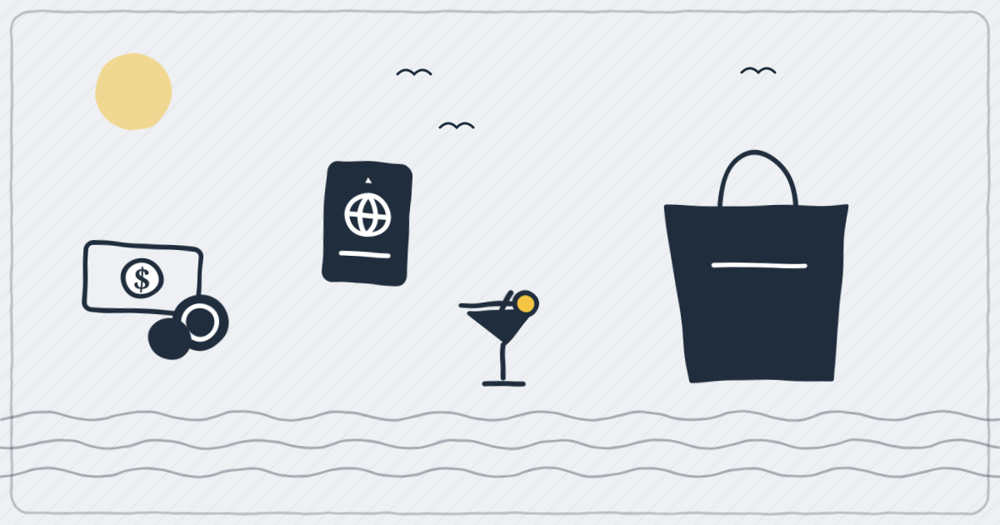

Cruise Duty-Free: Real Bargains and Border Limits

Spirits and tobacco are usually genuinely cheaper on board; perfume, watches and jewellery are a mixed bag. The sale is tax-free, but your border is not: Canadians get C$800 and one alcohol allowance after 48 hours away, US residents US$800 and one litre. Go over and you pay duty, which can erase the saving.
The shops on a cruise ship open once the vessel is in international waters and sell without sales tax or import duty, which is why a litre of rum or a carton of cigarettes can look startlingly cheap. That part is real. What the shop cannot do is change the rules at the border you cross on the way home. Canada's CBSA and US Customs and Border Protection each give you a personal allowance, and anything above it is taxed as if you had never set foot in a duty-free store.
What does duty-free on a cruise ship actually mean?
It means the ship did not collect tax at the till. Goods that carry heavy taxes at home show the biggest gap: in Canada that is spirits and tobacco above everything else, and in the US it is mainly spirits and premium tobacco. Items that are lightly taxed at home, such as clothing, electronics and most cosmetics, gain little from the arrangement.
Two costs quietly eat into the headline price. Onboard shops charge in US dollars, so Canadians pay the exchange rate plus any foreign transaction fee on their card. And the shops are retailers with a captive audience, so "duty-free" is not the same as "lowest price anywhere."
What is really cheaper on a cruise ship?
- Spirits and liqueurs. Often well under provincial liquor store prices in Canada and competitive with US state stores, especially on litre-plus bottles.
- Cigarettes and cigars. Far below Canadian retail, but tightly rationed at the border.
- Fragrance and some cosmetics. Sometimes a genuine saving, often level with a department store sale at home. Know the price before you board.
- Watches, jewellery, gemstones. Hard to compare, hard to return, and heavily promoted. Buy only what you would buy at that price at home.
- Logo merchandise. Not duty-free in any meaningful sense; it is just a souvenir shop.
The "recommended stores" on the port shopping map hand out in the terminal pay to be on it. Recommended does not mean cheapest.
Canadian duty-free limits after a cruise
CBSA sets the allowance by how long you were out of Canada, not by where you went. Per person, at recent rules:
| Time away | Goods allowance | Alcohol and tobacco |
|---|---|---|
| Less than 24 hours | Nothing | Not allowed duty-free |
| 24 to 47 hours | C$200 | Not included |
| 48 hours or more | C$800 | One alcohol allowance plus tobacco, within the C$800 |
For alcohol you choose one: wine up to 1.5 litres (two regular bottles), spirits up to 1.14 litres (a single 40-ounce bottle), or beer up to 8.5 litres (about a flat of 24). You must be of legal drinking age in the province you arrive in. Tobacco is capped at 200 cigarettes, 50 cigars or 200 grams of loose tobacco, and stamped Canadian product is treated more favourably than foreign.
US duty-free limits after a cruise
US residents returning from most countries get a personal exemption of US$800 per person, which includes one litre of alcohol for anyone 21 or over and 200 cigarettes or 100 cigars. For most destinations you must have been out of the country at least 48 hours; returns from Mexico and the US Virgin Islands are exempt from that waiting rule. Shorter trips elsewhere fall to a US$200 exemption.
Cruises that call in the US Virgin Islands can qualify for a larger US$1,600 exemption and a higher alcohol allowance, depending on how much was bought there; check CBP's rules for the exact mix. Unlike Canada, the US lets family members travelling together pool their exemptions on one declaration.
The one-bottle trap
A 7-night cruise comfortably clears the 48-hour threshold, so the full C$800 or US$800 allowance applies. The limit that catches people is alcohol, because it is one allowance no matter how big your goods exemption is. Two 1.14-litre bottles of spirits into Canada means the second is assessed for federal duty, excise and provincial markup, and that can cost more than buying it at the liquor store.
Why the ship keeps your bottles until the last night
Alcohol bought in the onboard shop is held by the ship and delivered to your cabin on the final evening or handed over at disembarkation. The point is to keep you buying bar drinks rather than pouring your own. Plan your packing around it: bottles need to go in checked luggage if you fly home, wrapped well, which is a consideration on fly-cruises such as a Toronto to Miami cruise trip.
How to shop and declare without a problem
- Work out your allowance tier before you sail, based on nights away.
- Keep every receipt from the ship and from ports in one envelope.
- Run a tally in your home currency on your phone as you go; USD purchases convert as described in paying in CAD or USD.
- Declare everything at the terminal kiosk or to the officer, including gifts and anything bought ashore. Canadians can file in advance through the CBSA app; US residents can use the MPC app at many ports.
- Pay what is owed. Duty on one extra bottle is an annoyance; a seizure for non-declaration is a record.
Small souvenirs count too, from the fridge magnet to the box of chocolates, though they rarely push anyone over. The exception is anything that cannot cross the border at all: cannabis, even bought legally in Canada, is prohibited on ships and at both borders. Postcards, mercifully, are duty-free in every sense; see mailing postcards from a cruise.
Want this checked for your own sailing? A licensed cruise consultant can price it up and answer questions for free, with no obligation.
Ask a cruise expert →Shop with the border in mind
Know your tier, buy the one bottle that genuinely beats home, be sceptical of anything with a gemstone in it, and keep the receipts. Done that way, the shop is a small win and the border is a thirty-second conversation.
Questions people also ask
How much alcohol can I bring back from a cruise?
Into Canada after 48 hours or more away: 1.5 litres of wine, or 1.14 litres of spirits, or 8.5 litres of beer, per adult, within your C$800 exemption. Into the US: one litre per adult 21 or over within the US$800 exemption. Anything more is allowed but assessed for duty and taxes.
Is it cheaper to buy alcohol on a cruise ship or at home?
Usually cheaper on board for spirits, especially compared with Canadian provincial liquor stores. A large bottle at around US$30 on the ship often saves C$15 or so against the store price. The saving disappears on any bottle beyond your border allowance once duty and taxes are added.
Do you have to declare duty-free purchases from a cruise?
Yes. Everything you bring home counts toward your personal exemption and must be declared, even if you owe nothing. Keep receipts together, know your total in your home currency, and declare honestly; undeclared goods can be seized and penalties far exceed any duty saved.